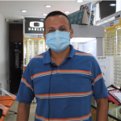
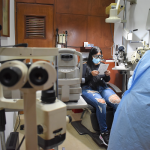
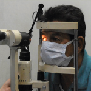
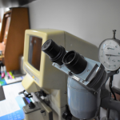
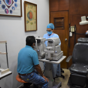
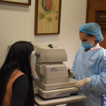
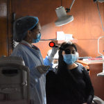

3154148812 / (037) 5720321
AV. 0B N° 21-09 Barrio Blanco, Cúcuta
Planta Mayorista: KM 13 KDX 1 - 1 Vereda Agualinda, sentido Cúcuta - Pamplona
Coomulpinort
Cooperativa Multiactiva
Inicio
Quiénes Somos
E.D.S. Vinculadas
Cúcuta (29)
Los Patios (3)
El Zulia (24)
Villa del Rosario (4)
Ver Todas (139)
Responsabilidad Social
Asociados
Interés Social
Sarlaft
Tratamiento de Datos
Código Buen Gobierno
Asamblea 2025
Contáctenos
Correo Institucional
Menú
Inicio
Quiénes Somos
E.D.S. Vinculadas
Cúcuta (29)
Los Patios (3)
El Zulia (24)
Villa del Rosario (4)
Ocaña (17)
Tibú (17)
Ábrego (7)
La Esperanza (5)
San Cayetano (5)
Hacarí (3)
Toledo (3)
Bucarasica (2)
Convención (2)
Cáchira (2)
El Carmen (2)
El Tarra (2)
Ragonvalia (2)
Río de Oro (2)
Sardinata (2)
Teorama (2)
Chinácota (1)
La Playa (1)
Pamplona (1)
San Calixto (1)
Responsabilidad Social
Asociados
Interés Social
Sarlaft
Tratamiento de Datos
Código Buen Gobierno
Asamblea 2025
Contáctenos
Correo Institucional
Optometría
Inicio
/
Proyectos
/
Optometria
Atención en optometría
Coomulpinort participa en la prevención de enfermedades visuales de sus asociados.
Coomulpinort ofrece auxilio de optometría para sus asociados.
¿Qué esperas para adquirirlo?







Coomulpinort ofrece auxilio de optometría para sus asociados.
Llamar
WhatsApp
Ubicación
Estaciones